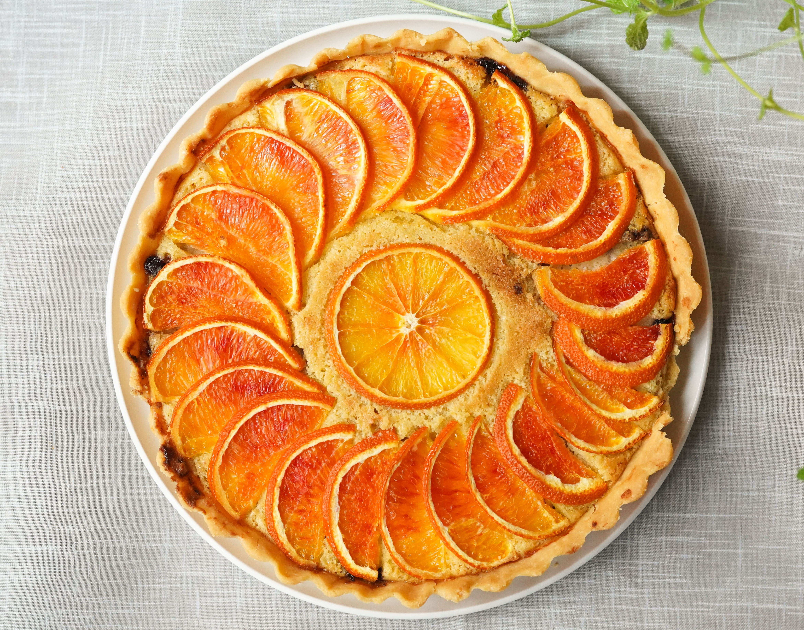
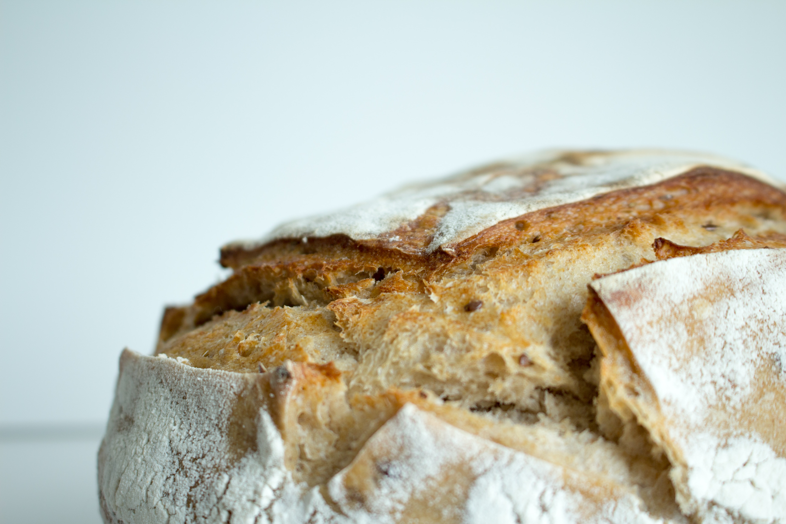

I nostri prodotti
I nostri prodotti sono preparati con il raccolto della nostra terra, incentivando la produzione locale e le giovani realtà,. Utilizziamo farine che mostrano il connubio tra la tradizione e l’innovazione. Una Farina di grano tenero Tipo " 1 ", ottenuta dalla macinazione a bassa raffinazione di grani pregerminati. Con questa particolare lavorazione si crea già nel grano la condizione enzimatica che il fornaio ricerca con, lunghe lievitazioni, pre-fermenti. Una farina ricca di micronutrienti e germe 100% vitale, che permette di avere un prodotto finale pronto in poche ore, ben lievitato e dalla crosta croccante. La forza del buono in meno tempo. Alveolatura sviluppata. Minori costi di produzione. Super effetto crock. Inoltre i nostri panettieri, preparano anche prodotti con farine senza glutine, come la farina di legumi e frutta secca, ad esempio come la farina di ceci. Quest'ultima e da sempre molto amata nella cucina tradizionale del nostro paese, perchè ricca di nutrienti, e proprietà, per la quale si contraddistingue. Inoltre èricchissima di fibre, e dal sapore dolciastro, rendendo eccezzionale l'abbinamento al salato: per questo si utilizza nelle preparazioni dei prodotti lievitati.

Pane
I pani che puoi trovare al forno sono dei tipi più diversi, fatti tutti secondo la tradizione.

Frolle
Le frolle che prepariamo sono solo con le marmellate e gli ingredienti più freschi a Km "0".

Prodotti tipici
Sui nostri scaffali si possono trovare anche i sapori della tradizione locale.

Glutin-Free
La nostra cura è anche quella di dare la possibilità a tutti di poter assaggiare i nostri "gusti", con le farine "glutin-free".

Salati
Non solo pane, ma anche pizza, pizzette e focace, per accontentare tutti i palati.

Maxi-taremezzino
Prepariamo anche il "MAXI-tramezzino", un tramezzino XXL, ripieno di ogni salume e salsa per i più golosi.